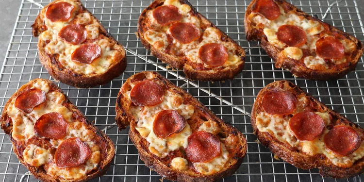

Bread and Butter Pizza

Best No-Dough Pizza Hack Ever!
Ingredients
- Thick slices of several day-old bread
- Butter
- Parmesan cheese
- Cheese
- Tomatoes
- Pizza sauce
- Pepperoni
Steps
- Place six thick slices of bread on the baking pan, separating each piece a few inches apart
- Generously butter both sides of each slice
- Grate a block of fresh Parmesan cheese over the top—not enough to pile up, but enough to cover the bread from crust to crust
- gently press the cheese down to secure it, then flip the bread cheese side down. The cheese and butter will meld together and caramelize onto the bottom of the pan
- Add the pizza sauce on to the opposite buttered side, smoothing it from edge to edge.
- load up each slice with mozarella cheese and pepperoni
- Bake until browned and melty